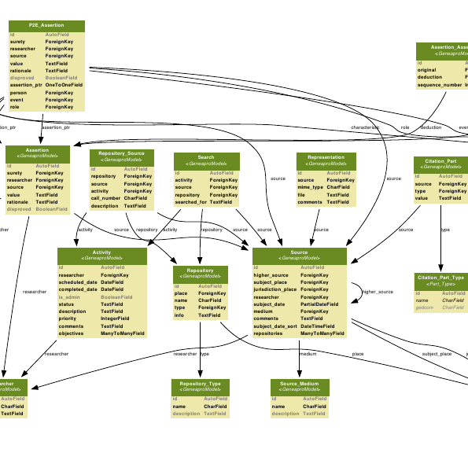

The GenTech model makes for an interesting read, and is full of very good ideas (of course, it was written by professionals). However, there are a number of things that I found under-described, and for which the software developer has to make guesses.
The idea behind this model is that all genealogical assertions about a person or a place come from either a source or a previous insertion, and we want complete traceability from source to assertions.
Here is the database schema underneath geneaprove. We use a standard SQL database (django supports various DBMS, although by default geneaprove is configured for sqlite). The queries are carefully optimized to limit their count and keep geneaprove fast.
This image was generated with
./manage.py graph_models geneaprove > t.dot dot -Tpdf -o datamodel.pdf t.dot
In GEDCOM, sources can be set directly on individuals, without going through an event. This in general occurs when a person is cited in a source (so we know her name, but not much else).
In Geneaprove, we store those as CENS (Census) events, using the source for that event.
In GEDCOM, notes can be associated with events. It isn't clear how these are represented in the GENTECH data model. It would be tempting to add the note into the name of the event, but then this will be lost if we export to GEDCOM again. We do not add a "comment/note" field to Event either, since this would not be linked through an assertion (or a source).
These are stored as characteristics of the persona. Through the Persona-To-Characteristics table, there is a source which is the image itself. Nice thing about this approach is that it provides a convenient place to store dates and places for the image (in the characteristic), as well as store where it was found and published (in the source).
The concept of Family as found in gedcom does not exist in Gentech. Such a concept is used in gedcom to store various pieces of information: marriages or other unions between two adults, parents of persons, and siblings. These can all be represented and computed differently in Gentech
As explained in the Features page, Geneaprove does not support the merging of two persons. However, it does support a way to link two or more personas to indicate they represent the same physical person and thus the events and characteristics of both personas should always be displayed together.
These links must be represented as assertions, so that we can associate an optional source, a rationale to explain the link, a surety level, a disproved attribute to indicate that the two personas are definitely not the same, and so on.
The Gentech datamodel proposes an approach to representing these links via a group of personas. Each of these groups represents a single physical person (so for instance the name of the group is "all personas for John Smith" and its type is "samePerson"). Then each persona that store some events or characteristics for John Smith is made a member of that group. At this point, the assertion we were talking about is between a persona and a group (a type of assertion specifically authorized by the Gentech datamodel).
This approach works well, even though graphically we should probably hide the fact that there is a group underneath, and just have a "is same as" assertion between two personas. It has however a few disadvantages.
10 and 11 (because they have same birth) ---> Group 1
12 and 13 (because they have same marriage) ---> Group 2
Group2 (because 11 and 12 have same death) ---> Group 1
(on the last step, we can also chose to create a Group 3 instead)
Ideally, if we disprove the "same death" assertion, we should end up with two persons in the list (one is the result of grouping 10 and 11, the other is the result of grouping 12 and 13). If instead we disprove the "same marriage", we end up with two personas (one is 10+11+12, the other is just 13).
That ideal behavior cannot be achieved if we create a single group for all the personas, since we no longer know how they are connected together. So we need groups inside groups (as is represented on the schema above in fact). But one thing not visible on the schema, and that cannot be represented with the groups, is that the "same death" assertion is about 11 and 12. This is only visible in the rationale text associated with the assertion, which Geneaprove cannot automatically use.
I therefore think the approach suggested by the Gentech authors is incorrect. the "is same as" relationship is between two personas, not between one persona and a group. This requires an assertion between two personas, which gentech does not recommend (but doesn't forbid either). The efficiency is comparable to the use of groups. At this point, the schema above becomes:
10__
\__same birth
11__/
\__same death
12__/
\__same marriage
13__/
On this new schema, it is clearer that if you break "same death", you end up with two groups 10+11 and 12+13. If you break "same marriage", you end up with two groups 10+11+12 and 13. So we have preserved the full chain of reasoning. 10 and 13 are only related together through a chain of assertions, and disproving any of these will simply unrelate 10 and 13.
A minor change was done to the handling of characteristics. In geneaprove, a "Characteristic" has its own name, in addition to having names characteristic_parts. This is useful when displaying multi-parts characteristics (like a name, which is made of a given name, a surname,...). Otherwise, when displaying the known information about a persona, there is no easy way to show what a group of characteristic_parts is about.
One source can be found in zero or more repositories; a repository can contain zero or more sources. In practice, the repository information is part of the full citation for a source (for instance see the book "Evidence Explained!" by E. Shown Mills), so is stored as part of the citation_part table in the Gentech model.
Duplicating that info into another set of tables for the repositories does not bring much added value. In fact, one can assume that the same source found in two different repositories will in general be a different copy of the source, and so potentially a different analysis should be made. Such a "duplicate" source could for instance be stored as a lower-level source in a source hierarchy.
The only interesting role given to a Repository, as described in the Gentech data model, is that of storing access information (postal address, schedules,...) and as part of a Search plan. For now, Geneaprove therefore does not handle repositories as separate entities.